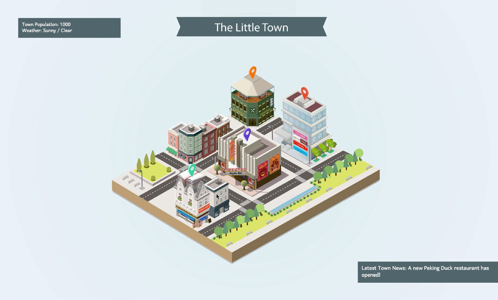
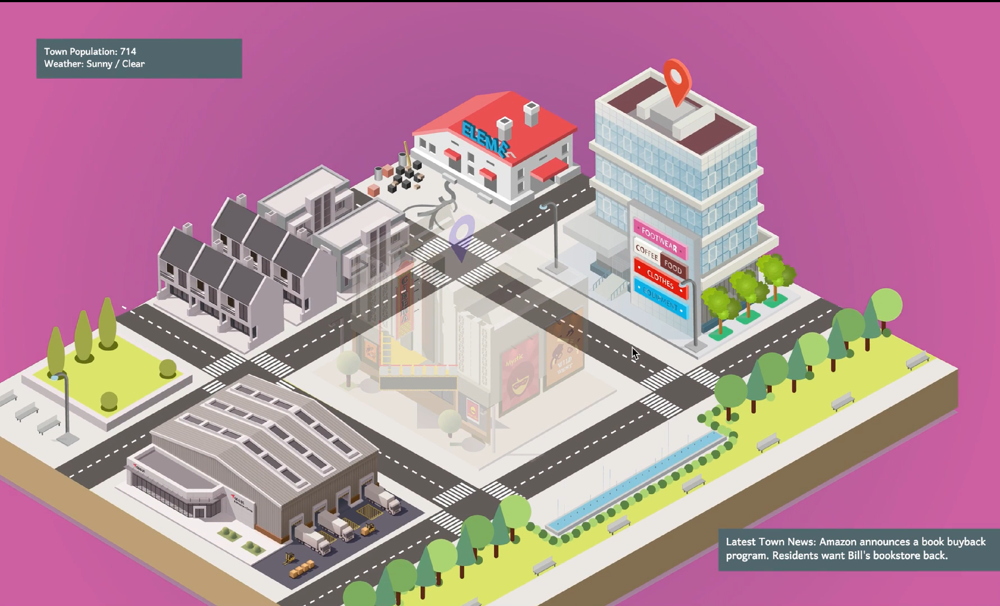
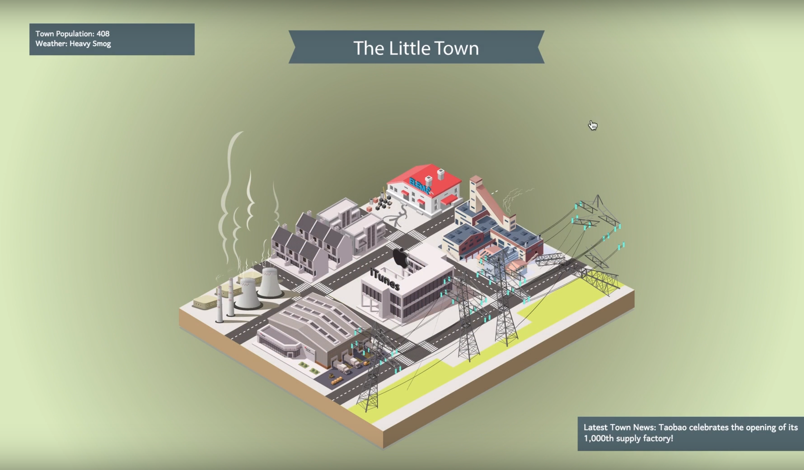

The Little Town (2017)
Vector Graphics, Animation, Storytelling
Adobe Illustrator, Snap.SVG, Javascript
The Little Town is an interactive comic or game of a cartoon town that lets its player determine the future of a small village. The users choices such as getting takeout instead of eating at a neighborhood restaurant, or buying from an online mega-store over shopping in the town's local shops lead to the flourishing or demise of the town.
In collaboration with Eric Zuo.



Technicals
This is a fun failed experiment created using isometric projection -- a visual representation of three-dimensional objects in two dimensions. The town is exported as an SVG and buildings and landmarks are labeled to allow for interactivity (in the browser or in an animation program).
The game was not much of a success, partly because of a lack of game mechanics and a lack of experience with game storytelling. The Little Town ended up being more like a forced visual novel than a creative attempt at a Sim-like game.